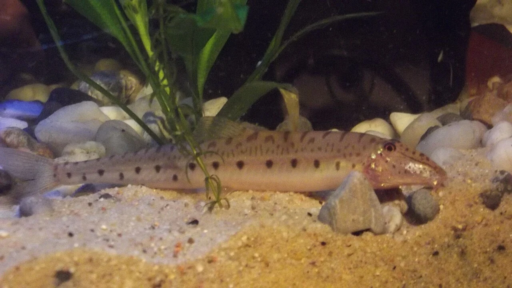
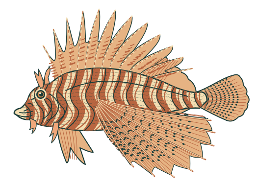
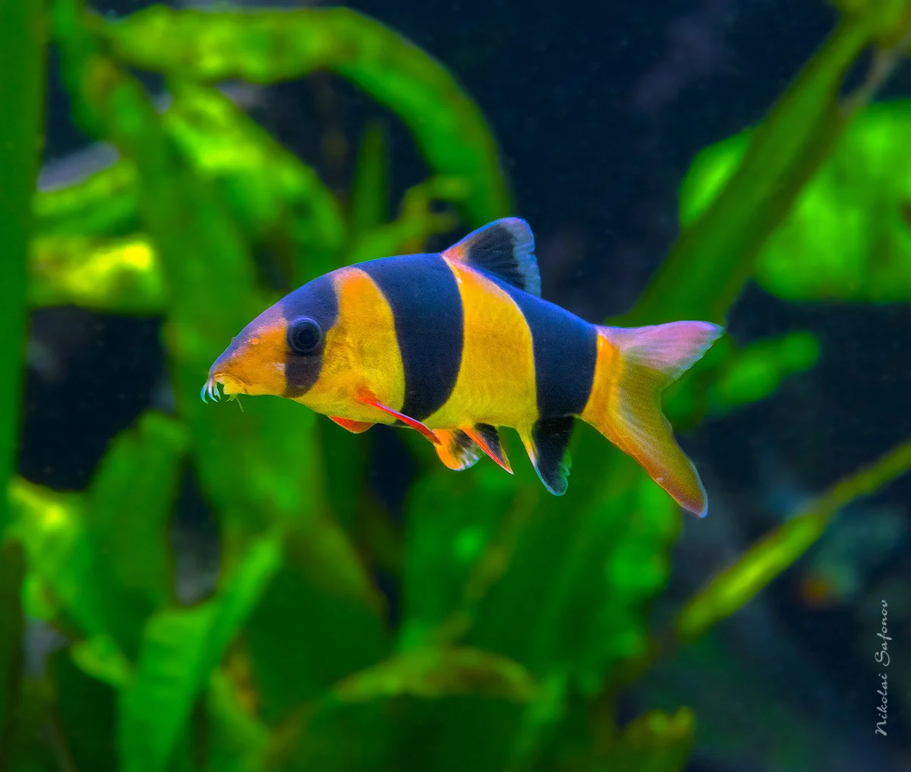

Пресная вода
Акантопсис лошадиноголовый
Acantopsis choirorhynchos
Размер L350 ₽ / шт.
Прайс · 26 ноября 2026, 01:00 МСК
Найдите рыбу и проверьте её наличие в супермаркете у метро «Университет».

Крылатка-зебраPterois volitans
Acantopsis choirorhynchos
Прайс · 26 ноября 2026, 01:00 МСК

Chromobotia macracanthus (Botia macracanthus)
Прайс · 26 ноября 2026, 01:00 МСК

Amphiprion ocellaris
Прайс · 26 ноября 2026, 01:00 МСК
Три силуэта аквариумных рыб. Узнайте вид по форме тела и плавников, затем сравните с фотографией.
ИгратьСообщение супермаркета «Университет» · пресная вода
В атласе — Акантопсис лошадиноголовый · Неон голубой · Боция-клоун (макраканта).
Публикация на форумеСообщение супермаркета «Университет» · морская вода
В атласе — Клоун оцеллярис (трехленточный).
Публикация на форуме